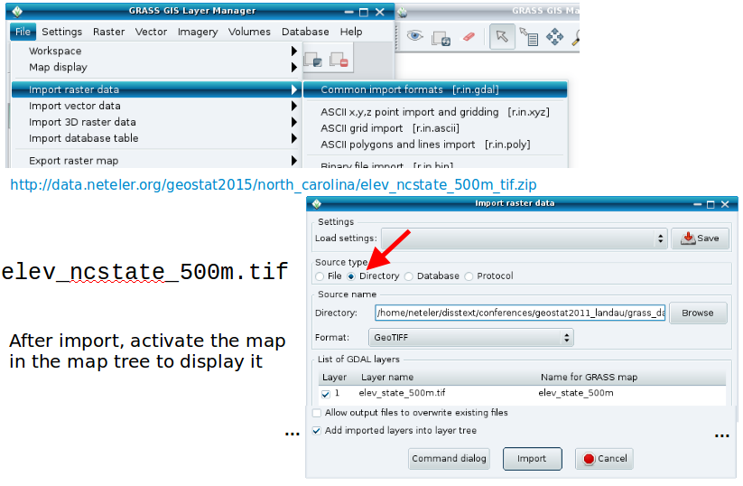
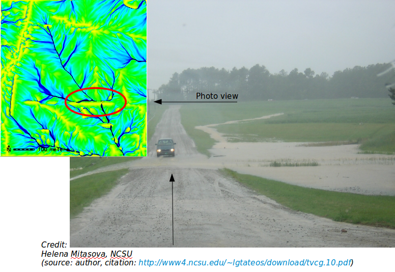

GRASS GIS 7 RASTER intro


Session Objectives
- GRASS GIS raster processing concepts
- Import of a GeoTIFF (DEM)
- Applying a color table to the DEM
- Raster: NULL values and MASK
- Working with the computational region
- Region and raster map import/export
- Raster map export
- Simple hydrological modelling
- Raster capabilities in GRASS GIS
computational region concept
Computational region
- defined by region extent and raster resolution
- applies to raster operations
Raster map region
- defined by map extents and map resolution
- each raster map has its own values
- reality checkcomputational region overrides raster region
Display region
- extents of the current map display
- independent of the current computational region and the raster region
- user can set the current computational region from display region
Exercise – Import of a GeoTIFF (DEM)
Since GRASS handles data in its own format, GIS files need to be imported (r.in.gdal/r.import) or just registered (r.external):

Applying a color table to DEM

Raster: NULL values and MASK
NULL values: no value – e.g. gaps in DEM
MASK (i.e., a raster map with this name, capital letters):
- MASK'ed cells are read as NULL cells -> usually skipped (also all areas outside the computation region)

Exercise– Working with MASKs
Load the “zipcodes” raster map into the Layer Manager and display it.
Set the computational region to the map (via right mouse button) or with
g.region raster=zipcodes -p
Now we want to pick only one ZIP code and restrict subsequent calculations to only that part.
- List raster attributes (or use query tool on map):
r.category zipcodes
- Set the MASK (here: using a raster map, also vector maps are supported – an inverse mask can be set adding the -i flag):
r.mask raster=zipcodes maskcats=27605
- Now display the map again (“Render map” icon) to see only that particular area of the “zipcodes” map
Note: the computational region is not updated by that.
MASK removal: r.mask -r
Working with the region
Print values of computational region (valid for the active MAPSET)
command:
g.region -p
wxGUI: Settings -> Region -> Set region

Raster map import/export
Import of raster maps
- r.in.* modules
r.import (it also offers reprojection on the fly)!
Always the full maps are imported.
Export of raster maps
r.out.* modules
!! Raster export adheres to computational region (and respects also a MASK if present)
r.out.gdal for export
GDAL supports > 140 raster formats.
Raster export via GDAL
command: r.out.gdal
wxGUI: File -> Export raster map -> Common export formats
Exercise:
Set region to some raster map
>g.region -p raster=<raster>
export this raster with r.out.gdal
> r.out.gdal input=<raster> output=<raster>.tif
Now
- display this raster map
- zoom in
- set region from display (icon)
- export again with r.out.gdal
- compare the size of the two exported raster maps
- compare output of gdalinfo
Note: White space in path needs quoting with “C:\PATH TO...”
Hydrological modelling
set computational region to map (using map metadata)
g.region raster=elev_lid792_1m -p
flow accumulation with MFD
r.watershed elevation=elev_lid792_1m accumulation=flowacc

check map list
g.list raster
show metadata
r.info flowacc
now look at map in map display
Hydrological analysis: reality check

Perspective view of flow accumulation:
Create a nice perspective view
- Load and highlight the “elev_lid792_1m” raster map in the layer manager
- In the map display, switch to “3D view” – in the upper right corner
- In wxNVIZ's “Data” tab, load “flowacc” as “Surface attrib./Color”
- Increase the shown map resolution in “Fine mode”: reduce the value

Raster capabilities in GRASS GIS
Example raster module groups
- resampling
- Reprojection/georectification
- map calculator
- Terrain analysis
- Hydrologic modeling
- Reports and statistics
Raster maps: DEMs, land cover, climatic maps …
Imagery maps: Landsat, MODIS, SPOT, QuickBird …
Raster data analysis: further methods
- Additional DEM analysis modules:
- depression areas can be filled with r.fill.dir
- flowlines can be calculated with r.flow
- trace a flow through a DEM: r.drain
- watershed analysis can be done with r.watershed and r.terraflow
- cost surfaces: r.cost, r.walk
- Energy:
- cast shadows, astronomical calculations of sun position: r.sunmask
- energy budget: r.sun
- Line of sight:
- viewsheds can be generated with: r.viewshed
- Interpolation methods
- 2D inverse distance weighted: v.surf.idw
- 2D from contour lines: r.surf.contour
- 2D bilinear: r.resamp.interp
- 2D regularized splines with tension (with cross validation): v.surf.rst
- 3D regularized splines with tension (with cross validation): v.vol.rst
- 2D/3D kernel densities: v.kernel